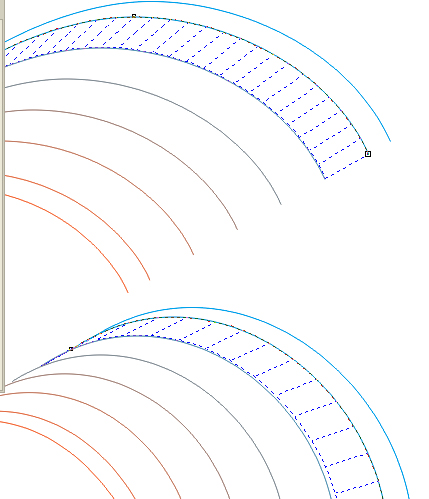

Георгиевская лента + перспектива
Этот урок является развитием предыдущего моего урока «Рисование георгиевской ленты. Быстрый способ».
Здесь также на примере георгиевской ленты рассматривается способ создания полосатых лент и флагов с использованием только эффекта Вытягивание, но в режиме "Назад с уменьшением" (то есть с перспективой).
Тем, кто не знаком с предыдущим уроком, этот не рекомендую, так как некоторые действия и приёмы использовавшиеся там, здесь подробно не рассматриваются.
1. Создадим из образующей кривой вытягивание широкой ленты с режимом «Назад с уменьшением. С помощью Безье отрисуйте линию –противоположную кромку ленты.
Разъедините группу вытягивания, разгруппируйте, спрячьте элементы широкой ленты на другой невидимый слой.
2. Между двумя образующими линиями (кромками ленты) создайте группу перетекания из ещё одиннадцати линий.
3. Удалите 3, 5,7,9,11 линии.

4. От линии 2 создайте вытягивание глубиной до следующей линии.
В параметрах настройки в окне Вытягивание изменяем только глубину, а направление не трогаем, оно было запомнено в результате предудущего вытягивания.
5. Аналогично создайте вытягивание второй и третьей узких полосок.
6. Дальнейшие действия по разъединению, разгруппировке и сгруппировыванию одноимённых элементов такие же как описанные в предыдущем уроке «Рисование георгиевской ленты. Быстрый способ». Здесь, в отличии от примера в предыдущем уроке, группа элементов 2 (та, что слева) должна занять верхнее положение в структуре слоёв.
7. Создание масок светотени точно такое же как и в прекдыдущем уроке.
Специально для CDRPRO.ru.
Запрещается копирование и публикация любым способом без письменного согласия автора.
Solowejka, можно было всё в одном уроке сделать.
П.С. Не желательно делать длинных названий тем.
Надо было развернуть, чтоб 9 получилась